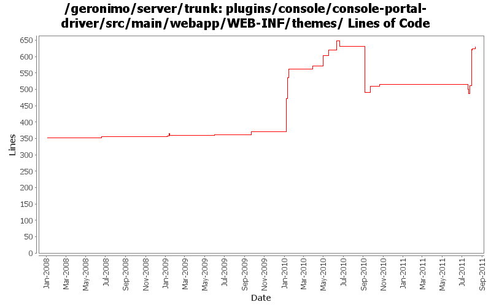

[root]/plugins/console/console-portal-driver/src/main/webapp/WEB-INF/themes

| Author | Changes | Lines of Code | Lines per Change |
|---|---|---|---|
| Totals | 77 (100.0%) | 1260 (100.0%) | 16.3 |
| genspring | 29 (37.7%) | 678 (53.8%) | 23.3 |
| rwonly | 23 (29.9%) | 541 (42.9%) | 23.5 |
| dwoods | 15 (19.5%) | 30 (2.4%) | 2.0 |
| gawor | 1 (1.3%) | 5 (0.4%) | 5.0 |
| xuhaihong | 2 (2.6%) | 4 (0.3%) | 2.0 |
| xiaming | 1 (1.3%) | 1 (0.1%) | 1.0 |
| djencks | 5 (6.5%) | 1 (0.1%) | 0.2 |
| jbohn | 1 (1.3%) | 0 (0.0%) | 0.0 |
GERONIMO-6107 Quick lauch doesn't support searching twice
10 lines of code changed in 1 file:
GERONIMO-6059 New look and feel of Geronimo 3.0 admin console (Step 2, New UI design)
19 lines of code changed in 2 files:
GERONIMO-6059 IE(version<9) can not support radius border div, and a div can not autoly extend when the text in it is longer than its width.
15 lines of code changed in 1 file:
GERONIMO-6059 New look and feel of Geronimo 3.0 admin console (Step 1)
304 lines of code changed in 6 files:
GERONIMO-6094 Some issues of confirm msg tld in admin console
46 lines of code changed in 5 files:
Still use the banner.jsp to make the rebranding work of a custom g build easy.
11 lines of code changed in 2 files:
GERONIMO-6088 Cross browser incompatibility of admin console
54 lines of code changed in 2 files:
GERONIMO-6080 When shutdown server or uninstall module in browser, could not dispaly the confirm dialog. Patch from Yi Xiao.
2 lines of code changed in 1 file:
GERONIMO-6078 Navigation tree displays wrong links for different roles, patch from Shenghao Fang
10 lines of code changed in 1 file:
GERONIMO-6081 Some admin console UI issues
58 lines of code changed in 3 files:
GERONIMO-5674 Dojo related improvement. show the tree's expanding icons. Patch from Yi Xiao.
1 lines of code changed in 1 file:
GERONIMO-5674 Dojo related improvement. Patch from Xiao Yi to replace the full dojo with a customized dojo.
1, DojoHowToCompress/**/* files are the build script to build geronimo customized dojo.
2, dojo/**/* files are the customized dojo files for geronimo.
3, dojo-tomcat and dojo-jetty modules are removed.
4, customized dojo files are put into console-portal-driver webapp so that other jsp can reference the dojo
files with /console/dojo/xxx
5, also updated all dojo references in all jsps to the new dojo location.
4 lines of code changed in 2 files:
GERONIMO-5895 fix variant accessibility issues, patched by Shenghao Fang
1 lines of code changed in 1 file:
GERONIMO-5612 Filter no permission functions for built-in user "monitor"
12 lines of code changed in 1 file:
GERONIMO-5516 Display basic set of navigation items in a list instead of a tree
25 lines of code changed in 1 file:
GERONIMO-5516 Add isAdvanced properties to AdminConsoleExtensionGBean. Patch from janel with modifications.
33 lines of code changed in 1 file:
GERONIMO-5325 iframe causes some portlets display incorrectly - fix huge blank (Original patch from Ben, Thanks!)
24 lines of code changed in 1 file:
GERONIMO-5325 iframe causes some portlets display incorrectly
43 lines of code changed in 2 files:
fix ajax history problem for web console
25 lines of code changed in 3 files:
Add/Update portlet 2.0 tld files and fix the image urls
3 lines of code changed in 1 file:
GERONIMO-5217 History.back and History.forward is not working correctly after change the console navigation to ajax.
34 lines of code changed in 2 files:
GERONIMO-5208 console is broken after upgrading dojo to 1.4.2
30 lines of code changed in 1 file:
GERONIMO-4994 use hash to keep the page to the latest page viewed after refresh.
43 lines of code changed in 3 files:
GERONIMO-4994 adding g11n support for the new navigation tree.
1 lines of code changed in 1 file:
GERONIMO-4994 expand and select tree node automatically when open menu item from quick launcher
66 lines of code changed in 1 file:
GERONIMO-4994 return to the top after clicking a menu item(navigation.jsp), refactor the resizing of iframe(portlets-with-tree.jsp).
32 lines of code changed in 2 files:
GERONIMO-4994 To support multiple level navigation tree in geronimo web console.
308 lines of code changed in 5 files:
GERONIMO-4823 role-based administration capabilities
9 lines of code changed in 1 file:
GERONIMO-4708 Use released pluto version, implement icon handling in geronimo code. Also put pluto dependency management into pluto plugin. Also delete some now unused repository entries
1 lines of code changed in 1 file:
GERONIMO-4662 Console title is not displayed with the correct locale setting
1 lines of code changed in 1 file:
delete some empty unused files
0 lines of code changed in 1 file:
GERONIMO-4474 Pull out the text in the JSP files to resource bundle files. Applied jsp-localization-tomcat6-connector.patch, jsp-localization-securityrealm.patch and jsp-localization-activemq-ra.patch from Gang Yin.
2 lines of code changed in 2 files:
GERONIMO-4507 Admin console should honor the priority of user agent's language setting. Applied locale-priority_fix.patch from Gang Yin.
2 lines of code changed in 2 files:
GERONIMO-4507 Admin console should honor the priority of user agent's language setting. Applied patch from Gang Yin.
8 lines of code changed in 2 files:
GERONIMO-4484 Extraction, localization and display of messages generated in portlets. Applied common-message-base.patch and common-message-core.patch from Gang Yin, with some minor updates.
2 lines of code changed in 1 file:
console icons are back (GERONIMO-3562)
5 lines of code changed in 1 file:
GERONIMO-4024 Accessbility issue: no 'Skip to main content' support for screen readers. Also, fixed indent usage in banner.jsp.
5 lines of code changed in 3 files:
GERONIMO-4024 added missing ALT img tags for console login/logout pages and navigation jsp fragment
11 lines of code changed in 3 files:
GERONIMO-1775 2nd internationalization patch from YunFeng Ma, with some spelling corrections
0 lines of code changed in 4 files:
GERONIMO-1775 Internationalization of the Admin Console. First patch from YunFeng.
0 lines of code changed in 2 files: